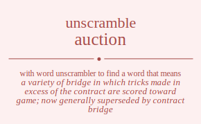

The word found after unscrambling auction means that a variety of bridge in which tricks made in excess of the contract are scored toward game; now generally superseded by contract bridge, the public sale of something to the highest bidder, sell at an auction, .
